以下是可以在122.0.65.73 23333端口使用的先行卡的列表。下载补丁后即可使用。
使用方法：原版游戏下载补丁后解压至游戏文件夹，YGOMobile请自定义数据库（方法请查看压缩包内使用说明），暂不保证对其他版本的支持。
资料来源：任天堂世界论坛，@Solari_28。
脚本作者：ygopro-pre-script，YGOPRO。目前所有脚本来自于以上这2个项目，在此对各自的贡献者表示感谢。
版权声明：转载请注明出自本页面，并完整保留附带的使用说明文档。如果您想对本项目进行修改，请移步这里，但我们建议您直接参与官方项目ygopro-pre-script。
星星和加号图标是Yusuke Kamiyamane的作品。
更新记录
- 2016-07-07 18:18
- 新卡：炼狱之骑士 多禄某、魔界剧团新卡2张、堕天使新卡3张。
- 修复：水晶机巧入舱改变等级应为永久改变。
- 2016-07-07 01:08
- 新卡：潘德拉宝具箱。
- 2016-07-06 18:14
- 新卡：礼物卡。
- 修复：精炼装勇士·万溶不能装备自己的怪兽的问题。
- 修复：大欲之壶把对方的卡回到卡组的场合不洗牌的问题。
- 2016-07-05 02:52
- 修复：精炼装勇士·万溶只在自身效果把怪兽装备时才能把那只怪兽作为融合素材的问题。
- 2016-07-04 10:21
- 修复：炼装融合怪兽部分情况下融合条件错误。
- 2016-07-04 01:51
- 新卡：精炼装勇士·万溶。
- 2016-07-02 21:26
- 新卡：龙核的咒灵者。
- 修复：龙星的九支无效和破坏应为不同时处理。
- 2016-07-02 11:08
- 修复：龙星的九支能把刚被回到自己额外卡组的卡再次破坏的问题。
- 2016-07-01 17:23
- 修复：水晶阵·潜能会给对方怪兽上升攻击力的问题。
- 修复：水晶机巧入舱墓地效果大部分情况下不能发动的问题。
- 2016-07-01 02:17
- 修复：源龙星-望天吼③效果无效的问题。
- 2016-07-01 02:11
- 修复：超重忍者 猿飞-B无法破坏后场的问题。
- 修复：源龙星-望天吼无法同调召唤的问题。
- 修复：水晶机巧入舱无法使用的问题。
- 2016-06-30 22:01
- 修复：古生物陷阱怪兽的处理。
- 2016-06-30 21:05
- 新卡：超重忍者 猿飞-B、源龙星-望天吼、水晶机巧魔陷3张。
- 2016-06-29 20:24
- 修复：饼蛙提示文字出现问号的问题。
- 2016-06-27 00:45
- 新卡：饼蛙、龙星的九支、真红眼的凶星龙-流星之龙、流星龙 流星黑龙。
- 更新：删除已经正式更新的卡。
- 2016-06-25 00:52
- 新卡：娱乐伙伴 妙想魔女、水晶机巧新卡8张。
- 修复：命运英雄 决意人无效伤害效果应为强制发动。
- 修复：命运英雄 敌托邦人能选择攻击力为0的怪兽为对象的问题。
- 修复：芳香炽天使-欧白芷未标记为取对象的问题。
- 修复：升阶魔法-幻影骑士团的出击能用命运狮子以外的怪兽把混沌No.88 机关傀儡-灾厄狮子特殊召唤的问题。
- 2016-06-22 22:20
- 新卡：机壳的冻结。
- 2016-06-22 02:21
- 修复：怒气土器效果无效的问题。
- 2016-06-21 19:03
- 新卡：怒气土器、次元障壁、「A」细胞重组装置、娱乐伙伴 调级敲钟人。
- 更新：优化部分卡图。
- 修复：超化合兽 甲醇燃冰兽不能把场上的卡送去墓地的问题。
- 修复：PSY骨架加速器发动提示出现问号的问题。
- 2016-06-20 00:26
- 新卡：扭力调整齿轮、大欲之壶。
- 更新：删除已经正式更新的卡。
- 2016-06-19 01:00
- 修复：PSY骨架加速器未被标记为「PSY骨架」卡的问题。
- 2016-06-19 00:37
- 修复：完全燃烧可以在送去墓地的回合发动的问题。
- 2016-06-18 16:11
- 修复：命运英雄 决断人不能被攻击效果无效的问题。
- 修复：PSY骨架加速器除外的卡不回场的问题，以及部分场合发动时出现问号的问题。
- 2016-06-18 15:48
- 修复：化合兽 碳素蟹在部分情况下无法发动效果的问题。
- 修复：化合电界除外的卡不会回场的问题。
- 2016-06-18 11:23
- 新卡：SPDS,INOV(910)新卡共18张。
- 修复：暗镇魂超量龙不取对象的问题。
- 2016-06-13 21:08
- 更新：优化部分卡图。
- 2016-06-13 10:15
- 修复：同盟格纳库在连锁处理中特殊召唤，连锁处理完成后特殊召唤的怪兽不在场上存在，也能以那只怪兽为对象发动效果的问题。
- 2016-06-12 19:15
- 新卡：王者的调和。
- 更新：优化部分卡图。
- 2016-06-10 18:05
- 新卡：真红眼看破。
- 2016-06-09 09:56
- 修复：小灰篮史莱姆不能使用的问题。
- 2016-06-08 22:04
- 新卡：小灰篮史莱姆。
- 更新：删除已经正式更新的卡。
- 2016-06-08 09:50
- 修复：点火骑士团结能以自己为对象的问题。
- 2016-06-07 20:51
- 新卡：点火骑士团结、沉默魔导剑士。
- 2016-06-06 10:48
- 修复：凶饿毒融合龙未标记蛇毒字段的问题。
- 2016-06-05 23:53
- 新卡：苏生栗子球。二效果暂时无法使用。
- 更新：优化部分卡图。
- 修复：蛇神 格特殊召唤效果在怪兽区没有格子时应送去墓地。
- 修复：根据调整，天声的服从应为发动方特殊召唤。
- 2016-06-01 21:08
- 修复：蛇神 格下降攻击力的处理。
- 2016-06-01 19:14
- 新卡：蛇神 格。
- 修复：更新ABC-神龙歼灭者的召唤条件。
- 2016-06-01 10:05
- 修复：ABC-神龙歼灭者不能用装备的同盟特殊召唤的问题。
- 2016-06-01 00:05
- 更新：优化部分卡图。
- 修复：更新ABC-神龙歼灭者的召唤条件，修复只有2个格子时不能发动解体效果的问题。
- 修复：暗黑圣域的效果处理。
卡片列表
| 卡图 | 卡名 | 效果 |
|---|---|---|
 | 古生物 林乔利虫 | [陷阱] ①：以除外的1张自己或者对方的卡为对象才能发动。那张卡回到墓地。 ②：场上的陷阱卡发动时，连锁那个发动这个效果才能从墓地发动。这张卡变成通常怪兽（水族·水·2星·攻1200/守0）在怪兽区域特殊召唤（不当作陷阱卡使用）。这个效果特殊召唤的这张卡不受怪兽的效果影响，从场上离开的场合除外。 |
 | 古生物 伊尔东钵 | [陷阱] ①：以场上1只表侧表示怪兽为对象才能发动。那只怪兽的攻击力·守备力直到回合结束时上升500。 ②：场上的陷阱卡发动时，连锁那个发动这个效果才能从墓地发动。这张卡变成通常怪兽（水族·水·2星·攻1200/守0）在怪兽区域特殊召唤（不当作陷阱卡使用）。这个效果特殊召唤的这张卡不受怪兽的效果影响，从场上离开的场合除外。 |
 | 古生物 皮卡虫 | [陷阱] ①：从手卡丢弃1张「古生物」卡。那之后，自己从卡组抽2张。 ②：场上的陷阱卡发动时，连锁那个发动这个效果才能从墓地发动。这张卡变成通常怪兽（水族·水·2星·攻1200/守0）在怪兽区域特殊召唤（不当作陷阱卡使用）。这个效果特殊召唤的这张卡不受怪兽的效果影响，从场上离开的场合除外。 |
 | 古生物 拟油栉虫 | [陷阱] ①：以场上1张魔法·陷阱卡为对象才能发动。那张卡破坏。 ②：场上的陷阱卡发动时，连锁那个发动这个效果才能从墓地发动。这张卡变成通常怪兽（水族·水·2星·攻1200/守0）在怪兽区域特殊召唤（不当作陷阱卡使用）。这个效果特殊召唤的这张卡不受怪兽的效果影响，从场上离开的场合除外。 |
 | 古生物 欧巴宾海蝎 | [怪兽|效果|超量] 水/水 [☆2] 0/2400 2星怪兽×2 「古生物 欧巴宾海蝎」的③的效果1回合只能使用1次。 ①：这张卡不受其他怪兽的效果影响。 ②：只要这张卡在怪兽区域存在，自己的「古生物」陷阱卡的发动从手卡也能用。 ③：这张卡有陷阱卡在作为超量素材的场合，把这张卡1个超量素材取除才能发动。从卡组把1张「古生物」陷阱卡加入手卡。 |
 | 古生物 足杯虫 | [陷阱] ①：以场上1张表侧表示的卡为对象才能发动。丢弃1张手卡，作为对象的卡除外。 ②：场上的陷阱卡发动时，连锁那个发动这个效果才能从墓地发动。这张卡变成通常怪兽（水族·水·2星·攻1200/守0）在怪兽区域特殊召唤（不当作陷阱卡使用）。这个效果特殊召唤的这张卡不受怪兽的效果影响，从场上离开的场合除外。 |
 | 古生物 奇虾 | [怪兽|效果|超量] 水/水 [☆2] 2400/0 2星怪兽×3只以上 ①：这张卡不受其他怪兽的效果影响。 ②：1回合1次，自己的魔法与陷阱区域的陷阱卡被送去墓地的场合才能发动。自己卡组最上面的卡翻开，那是陷阱卡的场合，加入手卡。不是的场合，送去墓地。 ③：这张卡有陷阱卡在作为超量素材的场合，1回合1次，把这张卡1个超量素材取除，以场上1张卡为对象才能发动。那张卡破坏。这个效果在对方回合也能发动。 |
 | 古生物 怪诞虫 | [陷阱] ①：以场上1只表侧表示怪兽为对象才能发动。那只怪兽的攻击力·守备力直到回合结束时变成一半。 ②：场上的陷阱卡发动时，连锁那个发动这个效果才能从墓地发动。这张卡变成通常怪兽（水族·水·2星·攻1200/守0）在怪兽区域特殊召唤（不当作陷阱卡使用）。这个效果特殊召唤的这张卡不受怪兽的效果影响，从场上离开的场合除外。 |
 | 古生物 马尔三叶形虫 | [陷阱] ①：从卡组把1张陷阱卡送去墓地。 ②：场上的陷阱卡发动时，连锁那个发动这个效果才能从墓地发动。这张卡变成通常怪兽（水族·水·2星·攻1200/守0）在怪兽区域特殊召唤（不当作陷阱卡使用）。这个效果特殊召唤的这张卡不受怪兽的效果影响，从场上离开的场合除外。 |
 | 古生物 加拿大虫 | [陷阱] ①：以对方场上1只表侧表示怪兽为对象才能发动。那只怪兽变成里侧守备表示。 ②：场上的陷阱卡发动时，连锁那个发动这个效果才能从墓地发动。这张卡变成通常怪兽（水族·水·2星·攻1200/守0）在怪兽区域特殊召唤（不当作陷阱卡使用）。这个效果特殊召唤的这张卡不受怪兽的效果影响，从场上离开的场合除外。 |
 | 娱乐伙伴 俊侍狮虎 | [怪兽|效果] 兽战士/地 [★4] 1800/400 「娱乐伙伴 俊侍狮虎」的效果1回合只能使用1次。 ①：这张卡战斗破坏对方怪兽送去墓地时才能发动。从卡组把1只5星以上的灵摆怪兽加入手卡。 |
 | 拼缝型毛绒动物 | [怪兽|效果] 天使/地 [★1] 0/0 ①：这张卡只要在怪兽区域存在，也当作「魔玩具」怪兽使用。 ②：这张卡只要在怪兽区域存在，可以作为「魔玩具」融合怪兽卡有卡名记述的1只融合素材怪兽的代替。那个时候，其他的融合素材怪兽必须是正规品。 |
 | 娱乐伙伴 调级敲钟人 | [怪兽|效果|灵摆] 天使/光 [★6] 100/2600 1/1 ←1 【灵摆】 1→ ①：1回合1次，自己主要阶段才能发动。自己场上的灵摆召唤的全部怪兽的等级上升1星。 【怪兽效果】 ①：1回合1次，宣言1～5的任意等级，以这张卡以外的自己场上1只「娱乐伙伴」怪兽为对象才能发动。直到回合结束时，这张卡的等级下降宣言的等级数值，作为对象的怪兽的等级上升宣言的等级数值。 （注：等级变更上限未确定） |
| 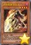 | 命运英雄 钻头人 | [怪兽|效果] 战士/暗 [★4] 1600/1200 「命运英雄 钻头人」的①的效果1回合只能使用1次。 ①：这张卡召唤·特殊召唤成功的场合才能发动。把持有这张卡的攻击力以下的攻击力的1只「命运英雄」怪兽从手卡特殊召唤。 ②：这张卡向守备表示怪兽攻击的场合，给与攻击力超过那个守备力的数值的战斗伤害。 |
| 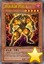 | 命运英雄 炸药人 | [怪兽|效果] 战士/暗 [★5] 1000/1000 ①：怪兽进行战斗的伤害计算时把这张卡从手卡丢弃才能发动。那次战斗发生的对自己的战斗伤害变成0，双方玩家受到1000伤害。 ②：把墓地的这张卡除外，以自己场上1只「命运英雄」怪兽为对象才能发动。那只怪兽的攻击力直到下次的对方回合结束时上升1000。 |
 | 命运英雄 决意人 | [怪兽|效果] 战士/暗 [★4] 1600/1000 「命运英雄 决意人」的①③的效果在决斗中各能使用1次。 ①：这张卡召唤·特殊召唤成功的场合才能发动。这个回合的结束阶段，选自己墓地1只「英雄」怪兽加入手卡。 ②：6星以上的对方怪兽不能选择这张卡作为攻击对象。 ③：这张卡在墓地存在，给与自己伤害的魔法·陷阱·怪兽的效果发动时发动。这张卡回到手卡，那个效果让自己受到的伤害变成0。 |
| 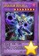 | 命运英雄 敌托邦人 | [怪兽|效果|融合] 战士/暗 [★8] 2800/2400 「命运英雄」怪兽×2 「命运英雄 敌托邦人」的①②的效果1回合各能使用1次。 ①：这张卡特殊召唤成功的场合，以自己墓地1只4星以下的「命运英雄」怪兽为对象才能发动。给与对方那只怪兽的攻击力数值的伤害。 ②：这张卡的攻击力和原本攻击力不同的场合，以场上1张卡为对象才能发动。那张卡破坏，这张卡的攻击力变成原本数值。这个效果在对方回合也能发动。 |
| 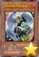 | 命运英雄 暗黑天使 | [怪兽|效果] 战士/暗 [★1] 0/0 ①：自己墓地的「命运英雄」怪兽是3只以上的场合，把这张卡从手卡丢弃，以自己墓地1只「命运英雄」怪兽为对象才能发动。那只怪兽在对方场上守备表示特殊召唤。 ②：只要这张卡在怪兽区域存在，自己发动的魔法卡的效果无效化并破坏。 ③：自己准备阶段从自己墓地把这张卡和1只「命运英雄」怪兽除外才能发动。双方玩家各自从卡组选1张通常魔法卡在卡组最上面放置。 （注：发动要求墓地怪兽数量暂未确定） |
| 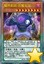 | 魔界剧团-恶魔反派 | [怪兽|效果|灵摆] 恶魔/暗 [★8] 3000/2000 1/1 ←1 【灵摆】 1→ ①：1回合1次，把自己场上1只「魔界剧团」怪兽解放，以对方场上1只表侧表示怪兽为对象才能发动。那只怪兽的攻击力直到回合结束时下降解放的怪兽的原本攻击力数值。 【怪兽效果】 ①：这张卡召唤·特殊召唤成功的场合，以对方场上1只表侧表示怪兽为对象才能发动。那只怪兽的攻击力直到回合结束时下降自己场上的「魔界剧团」怪兽数量×1000。 ②：这张卡战斗破坏对方怪兽时，以自己墓地1张「魔界台本」魔法卡为对象才能发动。那张卡在自己场上盖放。 |
| 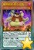 | 魔界剧团-胆小丑角 | [怪兽|效果|灵摆] 恶魔/暗 [★1] 300/200 8/8 ←8 【灵摆】 8→ ①：1回合1次，把自己场上1只「魔界剧团」怪兽解放，以自己场上1只「魔界剧团」怪兽为对象才能发动。那只怪兽的攻击力直到回合结束时上升解放的怪兽的原本攻击力数值。 【怪兽效果】 「魔界剧团-胆小丑角」的②的怪兽效果1回合只能使用1次，这个效果发动的回合，这张卡不能攻击。 ①：这张卡召唤·特殊召唤成功的场合才能发动。这张卡的攻击力直到回合结束时上升自己场上的「魔界剧团」怪兽数量×300。 ②：以这张卡以外的自己场上1只「魔界剧团」怪兽为对象才能发动。那只怪兽的攻击力直到回合结束时上升这张卡的攻击力数值。 |
| 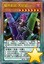 | 魔界剧团-大明星 | [怪兽|效果|灵摆] 恶魔/暗 [★7] 2500/1800 3/3 ←3 【灵摆】 3→ ①：1回合1次，把自己场上1只「魔界剧团」怪兽解放，以自己墓地1张「魔界台本」魔法卡为对象才能发动。那张卡加入手卡。 【怪兽效果】 ①：在这张卡的召唤·特殊召唤成功时，对方不能把魔法·陷阱卡的效果发动。 ②：1回合1次，自己主要阶段才能发动。从卡组选1张「魔界台本」魔法卡在自己场上盖放。这个效果盖放的卡在结束阶段送去墓地。 |
| 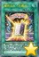 | 魔界台本「开幕式」 | [魔法] 「魔界台本「开幕式」」的①②的效果1回合各能使用1次。 ①：自己回复自己场上的「魔界剧团」怪兽数量×500基本分。 ②：自己的额外卡组有表侧表示的「魔界剧团」灵摆怪兽存在，盖放的这张卡被对方的效果破坏的场合才能发动。自己直到手卡变成5张为止从卡组抽卡。 |
| 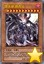 | 堕天使 路西法 | [怪兽|效果] 天使/暗 [★11] 3000/3000 这张卡不能特殊召唤。 ①：这张卡上级召唤成功的场合才能发动。把最多有对方场上的效果怪兽数量的「堕天使」怪兽从手卡·卡组特殊召唤。 ②：只要自己场上有其他「堕天使」怪兽存在，对方不能把这张卡作为效果的对象。 ③：1回合1次，自己主要阶段才能发动。把场上的「堕天使」怪兽数量的卡从自己卡组上面送去墓地。自己回复这个效果送去墓地的「堕天使」卡数量×500基本分。 |
| 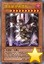 | 堕天使 伊希塔布 | [怪兽|效果] 天使/暗 [★10] 2500/2900 自己对「堕天使 伊希塔布」1回合只能有1次特殊召唤，那些作为①②的效果1回合各能使用1次。 ①：从手卡把这张卡和1张「堕天使」卡丢弃才能发动。自己从卡组抽2张。 ②：支付1000基本分，以自己墓地1张「堕天使」魔法·陷阱卡为对象才能发动。那张魔法·陷阱卡的效果适用。那之后，墓地的那张卡回到卡组。这个效果在对方回合也能发动。 |
| 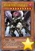 | 堕天使 特斯卡特利波卡 | [怪兽|效果] 天使/暗 [★9] 2800/2100 自己对「堕天使 特斯卡特利波卡」1回合只能有1次特殊召唤，那个作为②的效果1回合只能使用1次。 ①：自己场上的「堕天使」怪兽被战斗·效果破坏的场合，可以作为代替把手卡的这张卡丢弃。 ②：支付1000基本分，以自己墓地1张「堕天使」魔法·陷阱卡为对象才能发动。那张魔法·陷阱卡的效果适用。那之后，墓地的那张卡回到卡组。这个效果在对方回合也能发动。 |
| 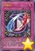 | D-融合 | [陷阱] 这张卡的效果融合召唤的场合，不是「命运英雄」怪兽不能作为融合素材。 ①：从自己场上把融合怪兽卡决定的融合素材怪兽送去墓地，把那1只融合怪兽从额外卡组融合召唤。这个效果特殊召唤的怪兽在这个回合不会被战斗·效果破坏。 |
| 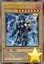 | 龙核的咒灵者 | [怪兽|通常|调整] 龙/暗 [★8] 2300/3000 长期以来持续猎龙而被龙血泼溅的缘故，得到了不属常人力量的女战士。其灵魂因沾染到所杀之龙的怨气，最终化为散布瘟疫的邪恶龙核。如今的她已经是无故乡可归，完全遵循着本能把刀剑染成血红，她自己也想不起那么做的目的了…。 |
| 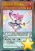 | 娱乐伙伴 妙想魔女 | [怪兽|效果|灵摆] 魔法师/暗 [★3] 800/800 4/4 ←4 【灵摆】 4→ 「娱乐伙伴 妙想魔女」的灵摆效果1回合只能使用1次。 ①：从额外卡组特殊召唤的怪兽只有对方场上才存在的场合才能发动。灵摆区域的这张卡特殊召唤。 【怪兽效果】 ①：灵摆怪兽上级召唤的场合，这张卡可以作为2只的数量解放。 |
 | 捕食植物 苍蝇地狱草 | [怪兽|效果] 植物/暗 [★2] 400/800 ①：1回合1次，以对方场上1只表侧表示怪兽为对象才能发动。给那只怪兽放置1个捕食指示物。有捕食指示物放置的2星以上的怪兽的等级变成1星。 ②：这张卡和持有这张卡的等级以下的等级的怪兽进行战斗的伤害步骤开始时才能发动。那只怪兽破坏。那之后，这张卡的等级上升破坏的那只怪兽的原本等级数值。 |
 | 捕食植物 海鳝猪笼草 | [怪兽|效果] 植物/暗 [★4] 1600/1000 ①：这张卡的攻击力上升场上的捕食指示物数量×200。 ②：这张卡战斗破坏对方怪兽时才能发动。那只破坏的怪兽当作装备卡使用给这张卡装备。 ③：1回合1次，以这张卡的效果装备的1张怪兽卡为对象才能发动。那张卡破坏，自己基本分回复那个原本攻击力的数值。 |
 | 捕食植物 鱿鱼茅膏菜 | [怪兽|效果] 植物/暗 [★2] 800/400 ①：把这张卡从手卡送去墓地，以自己场上1只表侧表示怪兽为对象才能发动。这个回合，那只怪兽可以向有捕食指示物放置的对方怪兽全部各作1次攻击。 ②：表侧表示的这张卡从场上离开的场合发动。给对方场上的特殊召唤的怪兽全部各放置1个捕食指示物。有捕食指示物放置的2星以上的怪兽的等级变成1星。 |
 | 光波双颚机 | [怪兽|效果] 机械/光 [★4] 1600/800 「光波双颚机」的②的效果1回合只能使用1次。 ①：从额外卡组特殊召唤的怪兽在对方场上存在，自己场上没有怪兽存在的场合，这张卡可以从手卡特殊召唤。 ②：丢弃1张手卡才能发动。从手卡·卡组把1只「光波」怪兽特殊召唤。这个效果的发动后，直到回合结束时自己不是「光波」怪兽不能特殊召唤。 |
 | 光波镜骑士 | [怪兽|效果] 战士/光 [★4] 0/0 「光波镜骑士」的②的效果1回合只能使用1次。 ①：自己的「光波」怪兽1只被战斗破坏送去自己墓地时，把这张卡从手卡丢弃才能发动。选自己的手卡·场上1张卡送去墓地，那只破坏的怪兽特殊召唤。 ②：这张卡被送去墓地的回合的结束阶段才能发动。从卡组把1张「光波」卡加入手卡。 |
| 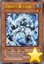 | 水晶机巧-量子白晶 | [怪兽|效果|调整] 机械/水 [★1] 500/500 「水晶机巧-量子白晶」的效果1回合只能使用1次。 ①：对方的主要阶段以及战斗阶段才能发动。从手卡把1只调整以外的怪兽效果无效特殊召唤，只用那只怪兽和这张卡为素材把1只机械族同调怪兽同调召唤。 |
| 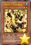 | 水晶机巧-矩阵黄晶 | [怪兽|效果|调整] 机械/水 [★2] 500/500 「水晶机巧-矩阵黄晶」的效果1回合只能使用1次。 ①：对方的主要阶段以及战斗阶段，以调整以外的自己墓地1只怪兽为对象才能发动。那只怪兽效果无效特殊召唤，只用那只怪兽和这张卡为素材把1只机械族同调怪兽同调召唤。那个时候的同调素材怪兽不去墓地而除外。 |
| 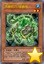 | 水晶机巧-绿晶龟 | [怪兽|效果] 机械/水 [★2] 500/2000 「水晶机巧-绿晶龟」的①②的效果1回合只能有1次使用其中任意1个。 ①：以自己场上1张表侧表示的卡为对象才能发动。那张卡破坏，从卡组把1只「水晶机巧」调整特殊召唤。这个效果的发动后，直到回合结束时自己不是机械族同调怪兽不能从额外卡组特殊召唤。 ②：把墓地的这张卡除外才能发动。从手卡把1只「水晶机巧」怪兽特殊召唤。 |
| 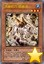 | 水晶机巧-烟晶虎 | [怪兽|效果] 机械/水 [★3] 1000/1800 「水晶机巧-烟晶虎」的①②的效果1回合只能有1次使用其中任意1个。 ①：以自己场上1张表侧表示的卡为对象才能发动。那张卡破坏，从卡组把1只「水晶机巧」调整特殊召唤。这个效果的发动后，直到回合结束时自己不是机械族同调怪兽不能从额外卡组特殊召唤。 ②：把墓地的这张卡除外才能发动。从卡组把1张「水晶机巧」魔法·陷阱卡加入手卡。 |
| 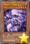 | 水晶机巧-紫晶龙 | [怪兽|效果] 机械/水 [★3] 1500/1500 「水晶机巧-紫晶龙」的①②的效果1回合只能有1次使用其中任意1个。 ①：以自己场上1张表侧表示的卡为对象才能发动。那张卡破坏，从卡组把1只「水晶机巧」调整特殊召唤。这个效果的发动后，直到回合结束时自己不是机械族同调怪兽不能从额外卡组特殊召唤。 ②：把墓地的这张卡除外才能发动。从卡组把「水晶机巧-紫晶龙」以外的1只「水晶机巧」怪兽加入手卡。 |
| 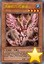 | 水晶机巧-红晶雀 | [怪兽|效果] 机械/水 [★4] 1800/1000 「水晶机巧-红晶雀」的①②的效果1回合只能有1次使用其中任意1个。 ①：以自己场上1张表侧表示的卡为对象才能发动。那张卡破坏，从卡组把1只「水晶机巧」调整特殊召唤。这个效果的发动后，直到回合结束时自己不是机械族同调怪兽不能从额外卡组特殊召唤。 ②：把墓地的这张卡除外才能发动。在自己场上把1只「水晶机巧衍生物」（机械族·水·1星·攻/守0）特殊召唤。这衍生物不能解放。 |
| 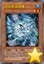 | 化合兽 氢素鹰 | [怪兽|效果|二重] 鸟兽/水 [★2] 1400/700 ①：这张卡只要在场上·墓地存在，当作通常怪兽使用。 ②：可以把场上的当作通常怪兽使用的这张卡作为通常召唤作再1次召唤。那个场合这张卡变成当作效果怪兽使用并得到以下效果。 ●丢弃1张手卡，以自己墓地1只二重怪兽为对象才能发动。那只怪兽守备表示特殊召唤。「化合兽 氢素鹰」的这个效果1回合只能使用1次。 |
| 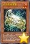 | 化合兽 碳素蟹 | [怪兽|效果|二重] 水/炎 [★2] 700/1400 ①：这张卡只要在场上·墓地存在，当作通常怪兽使用。 ②：可以把场上的当作通常怪兽使用的这张卡作为通常召唤作再1次召唤。那个场合这张卡变成当作效果怪兽使用并得到以下效果。 ●自己主要阶段才能发动。从卡组把1只二重怪兽送去墓地。那之后，从卡组把1只二重怪兽加入手卡。「化合兽 碳素蟹」的这个效果1回合只能使用1次。 |
| 化合兽 氧素牛 | [怪兽|效果|二重] 兽/风 [★2] 0/2100 ①：这张卡只要在场上·墓地存在，当作通常怪兽使用。 ②：可以把场上的当作通常怪兽使用的这张卡作为通常召唤作再1次召唤。那个场合这张卡变成当作效果怪兽使用并得到以下效果。 ●自己主要阶段才能发动。从手卡把1只二重怪兽特殊召唤，自己场上的全部二重怪兽的等级直到回合结束时变成和这个效果特殊召唤的怪兽的原本等级相同。「化合兽 氧素牛」的这个效果1回合只能使用1次。 | |
| 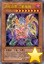 | 进化合兽 二氧鬼神 | [怪兽|效果|二重] 恶魔/暗 [★8] 2800/200 ①：这张卡只要在场上·墓地存在，当作通常怪兽使用。 ②：可以把场上的当作通常怪兽使用的这张卡作为通常召唤作再1次召唤。那个场合这张卡变成当作效果怪兽使用并得到以下效果。 ●只要这张卡在怪兽区域存在，二重怪兽的召唤不会被无效化。 ●1回合1次，把自己墓地1只二重怪兽除外，以对方场上1张卡为对象才能发动。那张卡破坏。 |
| 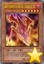 | 真红眼的凶星龙-流星之龙 | [怪兽|效果|二重] 龙/暗 [★6] 1800/2000 ①：这张卡只要在场上·墓地存在，当作通常怪兽使用。 ②：可以把场上的当作通常怪兽使用的这张卡作为通常召唤作再1次召唤。那个场合这张卡变成当作效果怪兽使用并得到以下效果。 ●只要这张卡在怪兽区域存在，这张卡以外的自己场上的「真紅眼」怪兽不会被战斗·效果破坏。 |
 | PSY骨架多线人 | [怪兽|效果] 念动力/光 [★6] 0/2500 「PSY骨架多线人」的③的效果1回合只能使用1次。 ①：这张卡只要在手卡·墓地存在，当作「PSY骨架驱动者」使用。 ②：自己场上的「PSY骨架」卡被战斗·效果破坏的场合，可以作为代替把手卡的这张卡丢弃。 ③：这张卡在墓地存在，自己场上有「PSY骨架」调整特殊召唤的场合才能发动。这张卡从墓地特殊召唤。这个效果特殊召唤的这张卡从场上离开的场合除外。 |
| 小灰篮史莱姆 | [怪兽|效果|调整] 水/水 [★2] 0/2000 ①：这张卡召唤成功时，以自己墓地1只「灰篮」怪兽为对象才能发动。那只怪兽特殊召唤。那之后，可以把和这个效果特殊召唤的怪兽相同等级的1只水族怪兽从手卡特殊召唤。这个效果的发动后，直到回合结束时自己不是水属性怪兽不能特殊召唤。 ②：这张卡被战斗破坏送去墓地时才能发动。从卡组把1只「灰篮」怪兽特殊召唤。 | |
 | 芳香炽天使-欧白芷 | [怪兽|效果|调整] 植物/光 [★1] 0/0 「芳香炽天使-欧白芷」的①②的效果1回合各能使用1次。 ①：把这张卡从手卡丢弃，以自己墓地1只「芳香」怪兽为对象才能发动。自己基本分回复那只怪兽的攻击力的数值。这个效果在对方回合也能发动。 ②：这张卡在墓地存在，自己基本分比对方多，自己场上有「芳香」怪兽存在的场合才能发动。这张卡从墓地特殊召唤。这个效果特殊召唤的这张卡从场上离开的场合除外。 |
| 怒气土器 | [怪兽|效果] 岩石/地 [★2] 500/500 「怒气土器」的效果1回合只能使用1次。 ①：把手卡1只岩石族怪兽丢弃才能发动。原本的属性·等级和那只怪兽相同的1只岩石族怪兽从卡组表侧攻击表示或者里侧守备表示特殊召唤。 | |
| 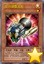 | 扭力调整齿轮 | [怪兽|效果|同盟|调整] 机械/光 [★1] 0/0 ①：1回合1次，可以从以下效果选择1个发动。●以自己场上1只表侧表示怪兽为对象，把这张卡当作装备卡使用给那只怪兽装备。装备怪兽被战斗·效果破坏的场合，作为代替把这张卡破坏。 ●装备的这张卡特殊召唤。 ②：装备怪兽当作调整使用，攻击力·守备力上升500。 |
| 潘德拉宝具箱 | [怪兽|效果|灵摆] 幻龙/暗 [★4] 1500/1500 4/4 ←4 【灵摆】 4→ ①：自己的额外卡组没有卡存在的场合，以对方的灵摆区域1张卡为对象才能发动。那张卡破坏，灵摆区域的这张卡在对方的灵摆区域放置。 【怪兽效果】 ①：只要自己的额外卡组没有卡存在并有这张卡在怪兽区域存在，自己抽卡阶段的通常抽卡变成2张。 | |
 | 电子化天使-美朱濡- | [怪兽|效果|仪式] 天使/光 [★10] 3000/2000 「机械天使的仪式」降临。 ①：这张卡仪式召唤成功的场合才能发动。从额外卡组特殊召唤的对方场上的怪兽全部破坏，给与对方破坏的怪兽数量×1000伤害。这个回合，这张卡在同1次的战斗阶段中可以作2次攻击。 ②：1回合1次，要让场上的卡破坏的魔法·陷阱·怪兽的效果发动时，让自己墓地1只仪式怪兽回到卡组才能发动。那个发动无效并破坏。 |
 | 凶饿毒融合龙 | [怪兽|效果|融合] 龙/暗 [★8] 2800/2000 衍生物以外的场上的暗属性怪兽×2 ①：这张卡融合召唤成功的场合才能发动。选对方场上1只特殊召唤的怪兽，这张卡的攻击力直到回合结束时上升那个攻击力数值。 ②：1回合1次，以对方场上1只5星以上的怪兽为对象才能发动。直到回合结束时，这张卡当作和那只怪兽同名卡使用，得到相同效果。 ③：融合召唤的这张卡被破坏的场合才能发动。对方场上的特殊召唤的怪兽全部破坏。 |
| 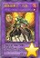 | 精炼装勇士·万溶 | [怪兽|效果|融合] 念动力/炎 [★1] 0/0 「炼装」怪兽＋通常怪兽 这张卡不用融合召唤不能特殊召唤。 ①：对方回合1次，以场上1只效果怪兽为对象才能发动。那只效果怪兽当作装备卡使用给这张卡装备。 ②：这张卡的守备力上升这张卡的效果装备的怪兽的原本攻击力数值。 ③：这张卡有由「炼装」融合怪兽卡决定的融合素材怪兽装备的场合，可以把那装备卡作为那只融合怪兽的融合素材使用。 |
| 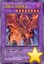 | 流星龙 流星黑龙 | [怪兽|效果|融合] 龙/暗 [★8] 3500/2000 7星「真红眼」怪兽＋6星龙族怪兽 ①：这张卡融合召唤成功的场合才能发动。从手卡·卡组把1只「真红眼」怪兽送去墓地，给与对方那只怪兽的原本攻击力一半数值的伤害。 ②：这张卡从怪兽区域送去墓地的场合，以自己墓地1只通常怪兽为对象才能发动。那只怪兽特殊召唤。 |
| 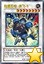 | 超重忍者 猿飞-B | [怪兽|效果|同调] 机械/地 [★8] 2000/2800 机械族调整＋调整以外的「超重武者」怪兽1只以上 这张卡在规则上也当作「超重武者」卡使用。 ①：这张卡可以用表侧守备表示的状态作出攻击。那个场合，这张卡用守备力当作攻击力使用进行伤害计算。 ②：1回合1次，自己墓地没有魔法·陷阱卡存在的场合，以场上1张魔法·陷阱卡为对象才能发动。那张卡破坏，给与对方500伤害。这个效果在对方回合也能发动。 |
 | 花札卫-猪鹿蝶- | [怪兽|效果|同调] 战士/暗 [★6] 2000/2000 调整＋调整以外的怪兽2只 ①：只要这张卡在怪兽区域存在，自己的「花札卫」怪兽向守备表示怪兽攻击的场合，给与对方为攻击力超过那个守备力的数值的战斗伤害。 ②：1回合1次，把自己墓地1只「花札卫」怪兽除外才能发动。直到下次的对方回合结束时，对方不能把墓地的卡的效果发动，不能从墓地把怪兽特殊召唤。 |
| 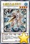 | 水晶机巧-量子刚玉 | [怪兽|效果|调整|同调] 机械/水 [★4] 1800/2000 调整＋调整以外的怪兽1只以上 ①：对方的主要阶段以及战斗阶段才能发动。用包含这张卡的自己场上的怪兽为同调素材作同调召唤。 ②：同调召唤的这张卡被战斗·效果破坏的场合，以同调怪兽以外的自己墓地1只「水晶机巧」怪兽为对象才能发动。那只怪兽特殊召唤。 |
| 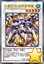 | 水晶机巧-矩阵紫黄晶 | [怪兽|效果|同调] 机械/水 [★5] 2500/1500 调整＋调整以外的怪兽1只以上 ①：这张卡同调召唤成功的场合才能发动。对方场上的特殊召唤的表侧表示怪兽全部变成守备表示。 ②：同调召唤的这张卡被战斗·效果破坏的场合，以同调怪兽以外的自己墓地1只「水晶机巧」怪兽为对象才能发动。那只怪兽特殊召唤。 |
 | 水晶机巧-轴子凤凰 | [怪兽|效果|同调] 机械/水 [★9] 2800/2000 同调怪兽调整＋调整以外的同调怪兽1只以上 ①：这张卡同调召唤成功的场合才能发动。对方的场上·墓地的魔法·陷阱卡全部除外。 ②：同调召唤的这张卡被战斗·效果破坏的场合，以这张卡以外的自己墓地1只怪兽为对象才能发动。那只怪兽特殊召唤。 |
| 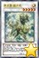 | 源龙星-望天吼 | [怪兽|效果|调整|同调] 幻龙/光 [★5] 0/2400 调整＋调整以外的怪兽1只以上 自己对「源龙星-望天吼」1回合只能有1次特殊召唤。 ①：这张卡特殊召唤成功的场合才能发动。从卡组把1张「龙星」卡加入手卡。 ②：1回合1次，从卡组把1只幻龙族怪兽送去墓地才能发动。这张卡的等级变成和送去墓地的怪兽相同。 ③：表侧表示的这张卡从场上离开的场合才能发动。从卡组把1只「龙星」怪兽加入手卡。 (注: 效果和守备力不确定) |
 | 暗镇魂超量龙 | [怪兽|效果|超量] 龙/暗 [☆5] 3000/2500 5星怪兽×3 ①：这张卡有「暗叛逆超量龙」在作为超量素材的场合，得到以下效果。 ●1回合1次，把这张卡1个超量素材取除，以对方场上1只表侧表示怪兽为对象才能发动。那只怪兽的攻击力变成0，这张卡的攻击力上升那个原本攻击力数值。 ●对方把怪兽的效果发动时，把这张卡1个超量素材取除才能发动。那个发动无效并破坏。那之后，可以选自己墓地1只超量怪兽特殊召唤。 |
| 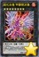 | 超化合兽 甲醇燃冰兽 | [怪兽|效果|超量] 兽战士/炎 [☆8] 3000/3000 8星二重怪兽×2 ①：这张卡超量召唤成功时，以自己墓地1只二重怪兽为对象才能发动。那只怪兽特殊召唤。 ②：只要持有超量素材的这张卡在怪兽区域存在，对方不能把自己场上的二重怪兽作为攻击对象，也不能作为效果的对象。 ③：二重怪兽召唤成功时，把这张卡1个超量素材取除才能发动。对方必须把自身的手卡·场上1张卡送去墓地。 |
| 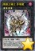 | 炼狱之骑士 多禄某 | [怪兽|效果|超量] 战士/暗 [☆4] 2600/550 4星「星守」怪兽×2 ①：只要这张卡在怪兽区域存在，场上的全部表侧表示怪兽变成暗属性。 ②：把这张卡1个超量素材取除，丢弃1张手卡才能发动。把1只光属性「星守」超量怪兽在自己场上的这张卡上面重叠当作超量召唤从额外卡组特殊召唤。这个效果的发动后，直到回合结束时自己不能把怪兽超量召唤。自己墓地有「星守」怪兽7种类以上存在的场合，这个效果在对方回合也能发动。 |
| 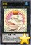 | 饼蛙 | [怪兽|效果|超量] 水/水 [☆2] 2200/0 水族2星怪兽×2 ①：自己·对方的准备阶段把这张卡1个超量素材取除才能发动。从卡组把1只「青蛙」怪兽特殊召唤。 ②：1回合1次，对方把怪兽的效果·魔法·陷阱卡发动时，把自己的手卡·场上1只水族怪兽送去墓地才能发动。那个发动无效并破坏。那之后，可以把破坏的卡在自己场上盖放。 ③：这张卡被送去墓地的场合，以自己墓地1只水属性怪兽为对象才能发动。那只怪兽加入手卡。 |
 | 惊异灵摆 | [魔法] 「惊异灵摆」在1回合只能发动1张。 ①：自己的灵摆区域没有卡存在的场合才能发动。从自己的额外卡组把2只卡名不同的表侧表示的「魔术师」灵摆怪兽加入手卡。 |
 | 升阶魔法-幻影骑士团的出击 | [魔法|速攻] ①：自己·对方的主要阶段，以自己场上1只没有超量素材的暗属性超量怪兽为对象才能发动。比那只自己怪兽阶级高1阶的1只暗属性超量怪兽在作为对象的怪兽上面重叠当作超量召唤从额外卡组特殊召唤，把这张卡在下面重叠作为超量素材。 ②：自己主要阶段把墓地的这张卡除外，以自己场上1只暗属性超量怪兽为对象才能发动。把手卡1只「幻影骑士团」怪兽在那只怪兽下面重叠作为超量素材。 |
 | 花积 | [魔法] 「花积」的②的效果1回合只能使用1次。 ①：从卡组选「花札卫」怪兽3种类，用喜欢的顺序回到卡组上面。 ②：把墓地的这张卡除外，以自己墓地1只「花札卫」怪兽为对象才能发动。那只怪兽加入手卡。这个效果在这张卡送去墓地的回合不能发动。 |
 | 超来来 | [魔法] 「超来来」在1回合只能发动1张。 ①：从自己卡组上面把3张卡翻开，那之中的「花札卫」怪兽尽可能无视召唤条件特殊召唤。这个效果特殊召唤的怪兽的等级变成2星，效果无效化。剩下的卡全部里侧表示除外，自己失去除外的卡数量×1000基本分。 ②：把墓地的这张卡除外，把自己场上1只怪兽解放才能发动。从手卡把1只「花札卫」怪兽无视召唤条件特殊召唤。 |
| 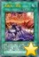 | 水晶阵·潜能 | [魔法|场地] ①：自己场上的「水晶机巧」怪兽的攻击力·守备力上升300。 ②：自己·对方的结束阶段才能发动。自己从卡组抽出这个回合自己同调召唤的「水晶机巧」同调怪兽的数量。 |
| 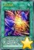 | 化合电界 | [魔法|场地] ①：只要这张卡在场地区域存在，自己在5星以上的二重怪兽召唤的场合需要的解放可以不用。这个效果1回合只能适用1次。 ②：只要这张卡在场地区域存在，自己在通常召唤外加上只有1次，自己主要阶段可以把1只二重怪兽召唤。 ③：1回合1次，以对方场上1张卡为对象才能发动。自己场上1只再1次召唤状态的二重怪兽直到对方结束阶段除外，作为对象的卡破坏。 |
| 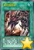 | 真红眼看破 | [魔法] 「真红眼看破」在1回合只能发动1张。 ①：从手卡·卡组把1只「真红眼」怪兽送去墓地才能发动。从卡组把「真红眼看破」以外的1张「真红眼」魔法·陷阱卡加入手卡。 |
| 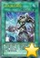 | 点火骑士团结 | [魔法|速攻] 「点火骑士团结」在1回合只能发动1张。 ①：以自己场上1张「点火骑士」卡为对象才能发动。那张卡破坏，从卡组把1只「点火骑士」怪兽特殊召唤。 |
| 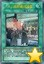 | 「A」细胞重组装置 | [魔法|速攻] ①：以场上1只表侧表示怪兽为对象才能发动。从卡组把1只「外星」怪兽送去墓地，送去墓地的怪兽的等级数量的A指示物给作为对象的怪兽放置。 ②：自己主要阶段把墓地的这张卡除外才能发动。从卡组把1只「外星」怪兽加入手卡。这个效果在这张卡送去墓地的回合不能发动。 |
| 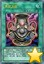 | 大欲之壶 | [魔法|速攻] 「大欲之壶」1回合只能发动1张。 ①：可以从除外了的自己以及对手的怪兽之中以合计3只为对象发动。那3只怪兽加入持有者的卡组洗切。那之后，自己从卡组抽1张。 |
| 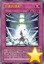 | 王者的调和 | [陷阱] ①：对方怪兽向自己的同调怪兽攻击宣言时才能发动。那次攻击无效。那之后，以下效果可以适用。 ●那只自己的同调怪兽和自己墓地1只调整除外，把持有和除外的怪兽的等级合计相同等级的1只同调怪兽从额外卡组当作同调召唤作特殊召唤。 |
 | 老千御法度 | [陷阱|永续] ①：1回合1次，对方从手卡把怪兽特殊召唤时才能发动。从手卡特殊召唤的对方场上的怪兽全部回到持有者手卡。 ②：场上没有「花札卫」同调怪兽存在的场合这张卡送去墓地。 |
 | 水晶机巧入舱 | [陷阱] 「水晶机巧入舱」的②的效果1回合只能使用1次。 ①：从自己的手卡·墓地各选1只「水晶机巧」调整特殊召唤。 ②：把墓地的这张卡除外，以自己场上1只「水晶机巧」怪兽为对象才能发动。把持有和那只怪兽的等级不同等级的1只「水晶机巧」怪兽从卡组送去墓地。作为对象的怪兽的等级变成和送去墓地的怪兽相同。这个效果在这张卡送去墓地的回合不能发动。 |
| 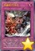 | 水晶机巧冲击 | [陷阱] ①：以除外的1只自己的「水晶机巧」怪兽为对象才能发动。那只怪兽特殊召唤，对方场上有表侧表示怪兽存在的场合，那些对方怪兽的守备力变成0。 ②：自己场上的「水晶机巧」怪兽为对象的魔法·陷阱·怪兽的效果发动时，把墓地的这张卡除外才能发动。那个效果无效。这个效果在这张卡送去墓地的回合不能发动。 |
| 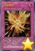 | 完全燃烧 | [陷阱] 「完全燃烧」在1回合只能发动1张。 ①：把自己场上1只表侧表示的「化合兽」怪兽除外才能发动。从卡组把2只「化合兽」怪兽特殊召唤（同名卡最多1张）。 ②：对方怪兽的直接攻击宣言时，把墓地的这张卡除外，以除外的1只自己的二重怪兽为对象才能发动。那只怪兽特殊召唤。这个效果特殊召唤的怪兽当作再1次召唤的状态使用。这个效果在这张卡送去墓地的回合不能发动。 |
| 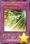 | PSY骨架加速器 | [陷阱|永续] ①：1回合1次，支付500基本分，以自己场上1只「PSY骨架」怪兽为对象才能发动。那只怪兽直到下次的自己准备阶段除外。 ②：1回合1次，这张卡以外的自己场上的表侧表示的「PSY骨架」卡因战斗以外从场上离开的场合才能发动。从手卡把1只「PSY骨架」怪兽特殊召唤。 |
| 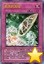 | 机壳的冻结 | [陷阱] ①：这张卡发动后变成效果怪兽（机械族·地·4星·攻1800/守1000）在怪兽区域特殊召唤（不当作陷阱卡使用）。这个效果把这张卡特殊召唤的回合，自己场上的「机壳」魔法·陷阱卡不会被效果破坏。 ②：这张卡的效果特殊召唤的这张卡在「隐藏的机壳」怪兽上级召唤的场合，可以作为3只的数量解放。 |
| 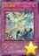 | 次元障壁 | [陷阱] 「次元障壁」在1回合只能发动1张。 ①：宣言1个怪兽的种类（仪式·融合·同调·超量·灵摆）才能发动。这个回合，双方不能把宣言的种类的怪兽特殊召唤，场上的宣言种类的怪兽的效果无效化。 |
| 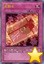 | 礼物卡 | [陷阱] 「礼物卡」在1回合只能发动1张。 ①：对方把手卡全部丢弃。那之后，对方从卡组抽5张。 |
| 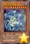 | 进化合兽 水蛇龙 | [怪兽|效果|二重] 龙/水 [★8] 200/2800 ①：这张卡只要在场上·墓地存在，当作通常怪兽使用。 ②：可以把场上的当作通常怪兽使用的这张卡作为通常召唤作再1次召唤。那个场合这张卡变成当作效果怪兽使用并得到以下效果。 ●这张卡以外的二重怪兽召唤成功时才能发动。那只怪兽的攻击力·守备力上升500。 ●自己场上的二重怪兽被效果破坏的场合，可以作为代替把自己场上1张卡破坏。 |
| 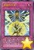 | 龙星的九支 | [陷阱|反击] ①：自己场上有「龙星」卡存在，怪兽的效果·魔法·陷阱卡发动时才能发动。那个发动无效，那张卡回到持有者卡组。那之后，选这张卡以外的自己场上1张「龙星」卡破坏。 |
常见问题
Q.某张卡有BUG！
A.请到页面下方留言反馈，或联系233服QQ群里的尸体233（QQ：921439818）。
Q.卡片右下角的黄色星星是什么意思？
A.表示那张卡暂未有实卡，是先行卡。其卡片密码暂时使用临时密码（1开头的9位数）。
这种卡需要在23333端口才能使用。此外部分使用同样密码体系的服务器（不包括Checkmate）也可以使用。
实卡发售后，对应的带星星的先行卡会失效，请更新游戏，来获取正式的版本。
Q.卡片右下角的绿色加号是什么意思？
A.表示那张卡已有实卡但YGOPRO的国内官方版本暂未更新，是本补丁增加的卡片。其卡片密码是正式密码。
这种卡在233端口更新前只能在23333端口使用。但其他更新速度较快的服务器（包括Checkmate）一般也可使用。
一般这种卡不久就会正式更新到233服，请关注公告，更新后请下载YGOPRO的正式更新来获取那些卡。
Q.为什么安装了最新的先行卡补丁仍然没有某些卡？
A.本补丁只包含先行卡，不包含已经正式更新的卡。
请下载YGOPRO的正式更新来获取那些卡。
Q.为什么我更新先行卡补丁之后反而有卡消失了？
A.因为那些卡已经不再是先行卡了，本补丁不再包含它们。
请下载YGOPRO的正式更新来获取那些卡。
Q.为什么YGOPOT不能使用这个补丁？
A.YGOPOT有自己的新卡更新体系和服务器，与YGOPRO和233服均不兼容，所以YGOPOT的用户请把更新新卡和修复BUG的工作交给他们。
Q.安装后没有新卡？
A.本补丁附带新卡列表的卡组。
请确保你把文件解压到了游戏文件夹里，而不是新建了一个文件夹。
电脑版需要重启游戏才能重新载入数据库。
手机版需要自定义数据库，详见使用方法。
Q.安装后新卡没有卡图？
A.请确保你解压出来了压缩包里所有文件，不能只解压1个文件。
Q.手机版找不到sdcard文件夹？
A.部分手机可能位于storage或mnt文件夹里。
Q.手机版提示没有权限？
A.同上，换个文件夹试试。
Q.某张卡不能用，提示无效卡组？
A.本补丁的最新版只能与23333端口完美兼容。
请下载YGOPRO的正式更新，并更新先行卡补丁到最新版，把端口改为23333，才能正常使用先行卡。
Q.搜索卡片时发现有重复卡片？
A.因为本补丁是先行卡补丁，正式更新的卡片可能会与本补丁的卡片重复。删除或更新本补丁即可。
Q.电脑版怎么删除补丁？
A.删除expansions文件夹或其中pre-release.cdb即可。
Q.手机版怎么删除补丁？
A.点自定义卡片数据库下面的重置卡片数据库。
如果你打过其他的补丁，还需要再自定义一次数据库，选择cards.cdb。